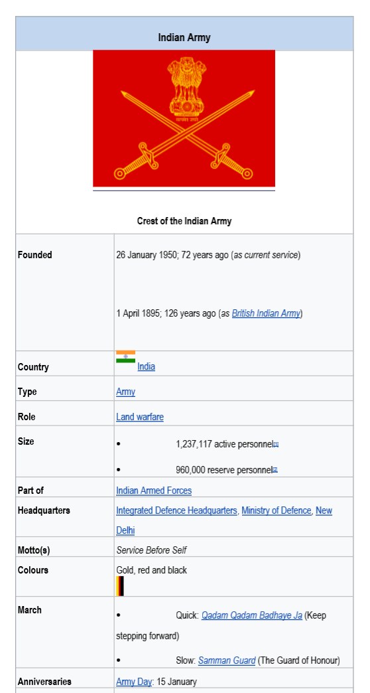

The Indian Army is the land-based branch and the largest component of the Indian Armed Forces. The President of India is the Supreme Commander of the Indian Army, and its professional head is the Chief of Army Staff (COAS), who is a four-star general.
The Indian Army originated from the armies of the East India Company, which eventually became the British Indian Army, and the armies of the princely states, which were merged into the national army after independence. The units and regiments of the Indian Army have diverse histories and have participated in several battles and campaigns around the world.
Primary Mission
The primary mission of the Indian Army is to ensure national security and national unity, to defend the nation from external aggression and internal threats, and to maintain peace and security within its borders. It conducts humanitarian rescue operations during natural calamities and other disturbances, such as Operation Surya Hope.
Pre-Independence Legacy
In 1776, a Military Department was created within the government of the East India Company at Kolkata. Its main function was to record orders that were issued to the army by various departments of the East India Company for the territories under its control.

The World Wars
In the 20th century, the British Indian Army was a crucial adjunct to British forces in both world wars. 1.3 million Indian soldiers served in World War I (1914–1918) with the Allies, in which 74,187 Indian troops were killed or missing in action.
By the end of World War II, it had become the largest volunteer army in history, rising to over 2.5 million men in August 1945. These brave hearts fought in Burma, the Middle East, and Europe, earning international respect for their discipline and courage.
Independence and Beyond
Upon the Partition of India and Indian independence in 1947, the British Indian Army was divided between the newly created nations of India and Pakistan. The departure of virtually all senior British officers following independence meant many Indian officers stepped into leadership roles.
Army Day is celebrated on 15 January every year in India, in recognition of Lieutenant General K. M. Cariappa's taking over as the first commander-in-chief of the Indian Army from General Sir Francis Butcher, the last British commander-in-chief, on 15 January 1949.
Major Conflicts
Indo-Pakistani War (1947)
Immediately after independence, tensions between India and Pakistan erupted into the first of three full-scale wars over the princely state of Kashmir. Indian troops were airlifted to Srinagar on 27 October 1947, stopping Pakistani-backed incursions.
Sino-Indian War (1962)
A dispute over sovereignty of Aksai Chin and Arunachal Pradesh led to this conflict. While the war was a difficult period for India, it led to major reforms and modernization of the armed forces that continue to this day.
The 1971 Liberation War
The most decisive victory came in 1971, which led to the creation of Bangladesh. Over 90,000 Pakistani soldiers surrendered to the Indian Army in Dhaka on 16 December 1971, marking the largest surrender since WWII.
Kargil War (1999)
In mid-1999, Pakistani forces captured strategic heights in the Kargil district. Through "Operation Vijay", the Indian Army fought in inhospitable high-altitude terrain to recapture every peak, demonstrating unparalleled grit.

Peacekeeping and Operations
India is one of the largest troop contributors to UN peacekeeping missions. So far, India has taken part in 43 Peacekeeping missions, with a total contribution exceeding 160,000 troops serving in regions like Cyprus, Lebanon, Congo, and South Sudan.
The Indian Army remains a symbol of national pride, secularism, and dedication, standing guard 24/7 to ensure we sleep in peace.